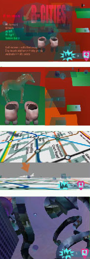

|  | B _ C I T I E S (by Parangari) Shake cities =+ points. Roll and destroy city snow globes through three abstract levels. Find animals to regenerate life. Headache dizzy split screens of simultaneous side view, up above master view, in the trenches 3rd person view. Level 1: Falling // Level 2: London tube map // Level 3: Snakey things at Mexico City World Trade Center. Made with Blender open source game engine. Feedback and bug reports to opensorcery@opensorcery.net Play B_Cities (PC, Blender 2.41 only)
|
|